Python може обробляти великі масиви числових даних, проте таблиці, що містять довгі стовпчики чисел важко сприймати візуально. Людський мозок набагато швидше знаходить закономірності, якщо представити інформацію у вигляді малюнка-діаграми.
Візуалізація даних — це мистецтво перетворення чисел на графіки, діаграми та карти. Вона допомагає миттєво побачити, як змінюється температура протягом місяця, який предмет у школі є найпопулярнішим, чи коли курс валюти досяг свого піка. Головним інструментом для створення графіків у Python є бібліотека Matplotlib— найвідоміша бібліотека Python для побудови двовимірних графіків та діаграм, яка є фундаментом аналізу даних (Data Science) та машинного навчання.
Matplotlib — це найпопулярніша бібліотека для візуалізації даних у мові програмування Python. Якщо говорити просто, вона перетворює набори даних — числові дані, масиви NumPy та таблиці Pandas на зрозумілі графіки, діаграми та креслення.
Ця бібліотека є фундаментальною для аналізу даних (Data Science), машинного навчання, а також для створення ілюстрацій до наукових і навчальних робіт.
Matplotlib дозволяє будувати різні типи графіків. Ось основні сфери її застосування:
bar charts) та кругових (pie charts) діаграм для наочного порівняння окремих елементів або часток від цілого;scatter plots), які допомагають побачити, чи пов'язані два параметри між собою (наприклад, зріст і вага учнів);Matplotlib — це стороння бібліотека, тому перед першим використанням її потрібно встановити через командний рядок або термінал вашого середовища розробки:
pip install matplotlib
У Linux та macOS команда встановлення бібліотеки має вигляд
pip3 install matplotlib. Також для комфортної математичної обробки часто встановлюють бібліотеку NumPy, яка чудово інтегрована з Matplotlib.
Для побудови графіків нам потрібен спеціальний підмодуль усередині бібліотеки, який називається pyplot. Його за загальноприйнятим стандартом підключають під коротким псевдонімом plt:
import matplotlib.pyplot as plt
# Тепер усі команди для малювання ми будемо викликати через коротке "plt."
Давайте не будемо заглиблюватися у складну будову бібліотеки, а одразу перетворимо набір чисел на малюнок. Створимо ламану лінію за чотирма точками:
import matplotlib.pyplot as plt
# Координати точок на горизонтальній осі (вісь X).
x = [1, 2, 3, 4]
# Координати точок на вертикальній осі (вісь Y).
y = [2, 5, 3, 6]
# Команда plt.plot() з'єднує точки (x, y) послідовними лініями.
plt.plot(x, y)
# Команда plt.show() відчиняє вікно з готовим графіком.
plt.show()
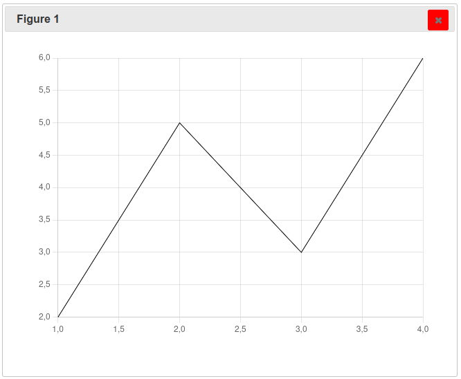
📊 Аналізуємо графік. Подивіться на результат. Що ми бачимо? На проміжку від 1 до 2 відбувається різке зростання, потім у точці 3 значення падає, а далі знову стрімко зростає до максимуму в точці 4.
Якщо передати функції
plt.plot()лише один список, наприкладplt.plot(y), бібліотека автоматично згенерує координатиxяк послідовність індексів[0, 1, 2, 3...].
Matplotlib та NumPy створені для спільної роботи. Передавати масиви NumPy у графіки не менш зручно, ніж звичайні списки, а якщо точок дуже багато — набагато швидше:
import numpy as np
import matplotlib.pyplot as plt
# Генеруємо масив чисел від 0 до 9.
x = np.arange(0, 10)
# Обчислюємо квадрат кожного числа (математична функція y = x^2).
y = x ** 2
plt.plot(x, y)
plt.show()
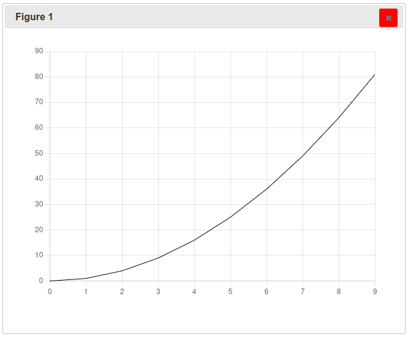
Графік без підписів — це просто лінія, яка ні про що не розповідає. Будь-яка серйозна візуалізація повинна мати назву, підписані осі та, за потреби, сітку для точного визначення значень. Для цього використовують такі команди:
plt.title("Текст") — додає головний заголовок угорі рисунка;plt.xlabel("Назва") та plt.ylabel("Назва") — підписують горизонтальну (X) та вертикальну (Y) осі;plt.grid(True) — вмикає тонку координатну сітку на задньому плані;plt.xlim(мінімум, максимум) та plt.ylim(мінімум, максимум) — вручну фіксують межі відображення осей, якщо потрібно наблизити чи, навпаки, віддалити якусь зону графіка.plt.plot(x, y)
plt.title("Динаміка росту показників", fontsize=14)
plt.xlabel("Час (у секундах)")
plt.ylabel("Швидкість (м/с)")
plt.grid(True)
plt.show()
import numpy as np
import matplotlib.pyplot as plt
x = np.arange(0, 10)
y = x ** 2
plt.plot(x, y)
plt.title("Динаміка росту показників", fontsize=14)
plt.xlabel("Час (у секундах)")
plt.ylabel("Швидкість (м/с)")
plt.grid(True)
plt.show()
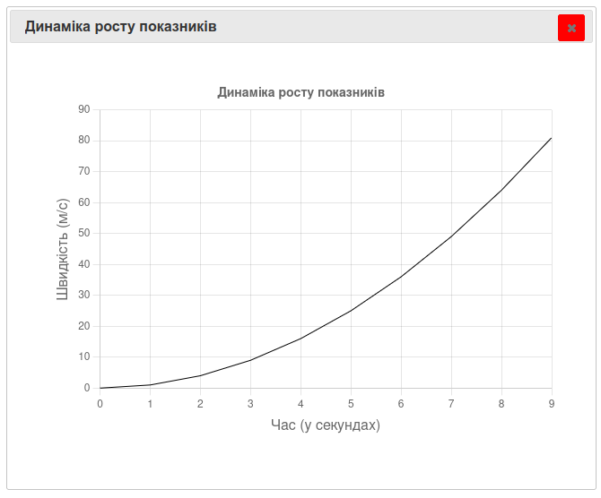
Ми можемо повністю змінювати дизайн нашої лінії за допомогою додаткових іменованих параметрів усередині команди plt.plot():
color (або c) — колір лінії: назва ("red", "green", "blue") або шістнадцятковий код ("#FF5733")[^2];linestyle (або ls) — стиль лінії: "-" — суцільна (за замовчуванням), "--" — штрихова, ":" — пунктирна, "-." — штрих-пунктирна;linewidth (або lw) — товщина лінії (наприклад, 2.5);marker — форма маркера в кожній точці: "o" — кружечок, "s" — квадрат, "^" — трикутник, "x" — хрестик;markersize (або ms) — розмір маркера.# Малюємо товсту червону пунктирну лінію з круглими маркерами на точках.
plt.plot(x, y, color="red", linestyle="--", linewidth=3, marker="o", markersize=8)
plt.show()
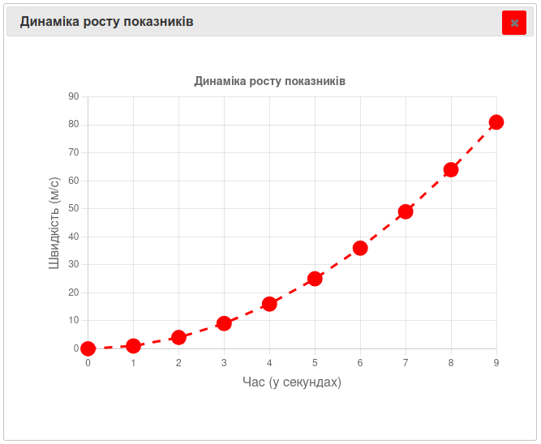
Якщо нам потрібно порівняти дві величини (наприклад, температуру в Києві та Одесі), можна викликати команду plt.plot() кілька разів поспіль перед тим, як написати plt.show(): Matplotlib автоматично накладе нові лінії на те саме полотно. Щоб глядач розумів, яка лінія що означає, використовують параметр label та команду plt.legend() (легенда графіка). Для того щоб лінії не зливалися, обирайте контрастні кольори та різні стилі — наприклад, суцільну лінію для фактичних даних і штрихову для прогнозованих.
dimport numpy as np
import matplotlib.pyplot as plt
days = np.arange(1, 6)
kyiv_temp = [15, 17, 16, 19, 20]
odesa_temp = [19, 20, 22, 21, 23]
plt.plot(days, kyiv_temp, color="blue", marker="o", label="Київ")
plt.plot(days, odesa_temp, color="orange", marker="s", label="Одеса")
plt.title("Порівняння температур")
plt.xlabel("День місяця")
plt.ylabel("Температура (°C)")
plt.legend() # пояснення з назвами міст.
plt.grid(True)
plt.show()
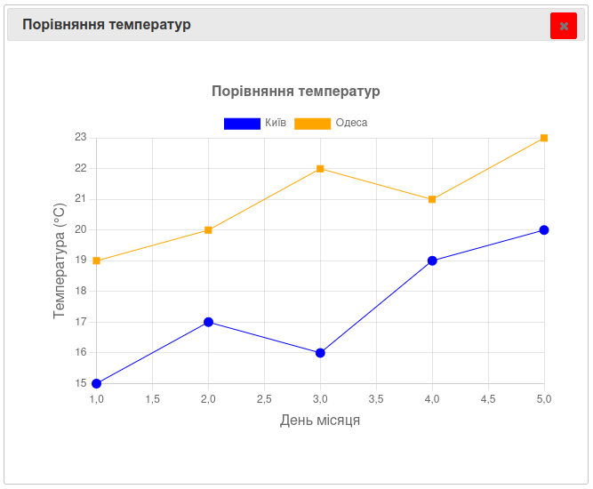
📊 Аналізуємо графік. Яка тенденція спостерігається? В Одесі протягом усіх днів стабільно тепліше, ніж у Києві. Найменша різниця температур між містами була у 4-й день.
Створіть графік успішності учня з інформатики за 4 тижні (наприклад, бали [9, 10, 11, 12]). Зробіть лінію зеленою, додайте квадратні маркери на точках, підпишіть осі та ввімкніть сітку.
plt.bar)Коли дані мають категоріальну структуру (назви товарів, класи, роки) і потрібно порівняти їхні абсолютні значення, замість лінійного графіка використовують стовпчасту діаграму — вона ідеально підходить для порівняння окремих категорій між собою. Будується функцією plt.bar(x, height, width=0.8, color=None), де x — категорії, height — висота стовпчиків, а width — їхня товщина (значення від 0 до 1).
import matplotlib.pyplot as plt
classes = ["5-А", "5-Б", "6-А", "6-Б"]
students_count = [25, 22, 28, 24]
plt.bar(classes, students_count, color="skyblue")
plt.title("Кількість учнів у класах")
plt.ylabel("Учні")
plt.show()
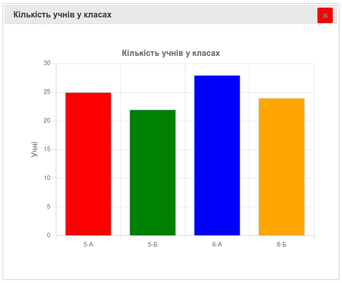
Якщо текстові назви категорій занадто довгі (наприклад, повні ПІБ або довгі назви предметів), вертикальні підписи накладатимуться один на одного. У такому випадку скористайтеся горизонтальною лінійчатою діаграмою — командою
plt.barh(y, width). Тутyвідповідає за категорії по вертикалі, аwidth— за довжину стовпчика по горизонталі.
plt.pie)Кругова діаграма використовується для демонстрації часток (відсотків) від одного цілого — наприклад, структура сімейного бюджету або розподіл вільного часу протягом доби. Будується функцією plt.pie(x, labels=None, autopct=None, startangle=0):
x — список числових значень (часток). Matplotlib самостійно підсумує їх та обчислить пропорційні сектори кола;labels — текстові підписи для кожного сектора;autopct — формат виведення відсотків прямо всередині секторів (наприклад, "%1.1f%%" виведе число з одним знаком після коми та знаком відсотка);startangle — кут початку першого сектора у градусах (90 розташовує перший сектор строго зверху, «з 12-ї години»);explode — список відступів, який дозволяє «висунути» обраний сектор із кола для акцентування уваги.import matplotlib.pyplot as plt
activities = ["Сон", "Навчання", "Відпочинок", "Спорт"]
hours = [8, 6, 7, 3]
# Параметр autopct='%1.1f%%' автоматично рахує та виводить відсотки на екрані.
plt.pie(hours, labels=activities, autopct='%1.1f%%',
colors=["gray", "blue", "green", "yellow"])
plt.title("Розподіл часу за добу")
plt.show()
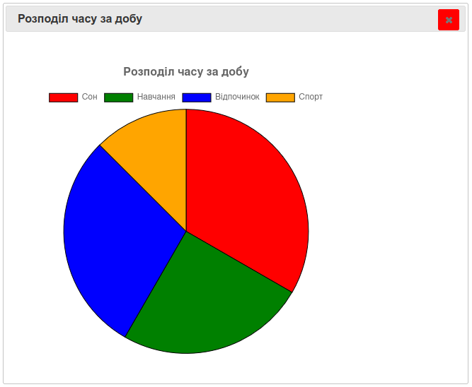
plt.scatter)Точкова діаграма (діаграма розсіювання) потрібна для дослідження взаємозв'язку між двома величинами. На відміну від plt.plot(), вона не з'єднує точки лініями, а просто розсипає їх по площині — це допомагає перевірити, чи впливає один показник на інший. Будується функцією plt.scatter(x, y, s=None, c=None, marker=None), де s (size) задає розмір маркера, а c (color) — його колір.
import matplotlib.pyplot as plt
# Досліджуємо: чи впливає час підготовки на оцінку за контрольну?
study_hours = [1, 5, 3, 2, 6, 4, 2, 7]
exam_grades = [6, 11, 9, 7, 12, 10, 8, 12]
plt.scatter(study_hours, exam_grades, color="purple", s=100, edgecolors="black")
plt.title("Залежність оцінки від часу навчання")
plt.xlabel("Час підготовки (години)")
plt.ylabel("Оцінка (бали)")
plt.grid(True)
plt.show()
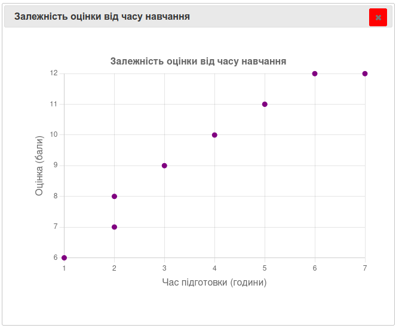
📊 Аналізуємо графік. Чи є тут аномальні значення? Ми бачимо чітку тенденцію: що більше годин учень вчиться, то вищу оцінку отримує. Усі точки вишикувалися по діагоналі вгору — це ознака сильного взаємозв'язку (кореляції) між двома величинами.
plt.hist)Гістограма ззовні схожа на стовпчасту діаграму, але має зовсім інше призначення, і початківці їх часто плутають!
plt.bar()відображає вже готові значення для окремих (дискретних) категорій. Аplt.hist()приймає один великий масив несортованих числових даних і самостійно групує їх в інтервали («кошики», або bins), підраховуючи, скільки чисел потрапило в кожен інтервал. Гістограма показує розподіл безперервної величини — наприклад, скільки людей у місті мають зріст від 160 до 170 см, скільки — від 170 до 180 см тощо.
Синтаксис: plt.hist(x, bins=None, color=None, edgecolor=None), де bins — ціле число, що вказує, на скільки однакових інтервалів розбити весь діапазон даних (за замовчуванням bins=10), а edgecolor — колір меж стовпчиків, який допомагає візуально відокремити інтервали один від одного.
import matplotlib.pyplot as plt
import numpy as np
from numpy import random
# Масив зі 100 випадкових оцінок великої школи.
all_grades = np.random.randint(1, 13, size=100)
# Будуємо гістограму. Параметр bins вказує кількість стовпчиків-інтервалів.
plt.hist(all_grades, bins=12, color="green", edgecolor="black")
plt.title("Розподіл оцінок у школі")
plt.xlabel("Бали")
plt.ylabel("Кількість оцінок цього рівня")
plt.show()
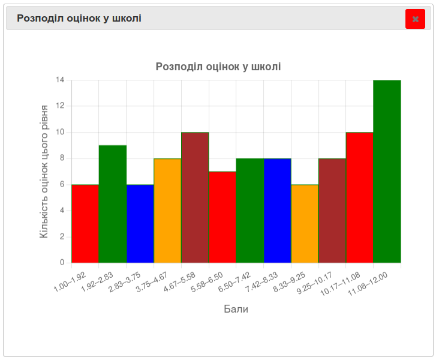
Щоб побудувати графік математичної функції (наприклад, параболи чи синусоїди), потрібна велика кількість точок з маленьким кроком, інакше замість гладкої кривої ми отримаємо некрасиву ламану лінію. Тут нам знову знадобиться NumPy, а саме команда np.linspace() (Розділ 14.6), яка генерує потрібну кількість рівновіддалених точок. Оскільки масиви NumPy обчислюються векторизовано, формула на кшталт y = x ** 2 миттєво порахує координату y для кожної точки одразу, без циклу for.
import numpy as np
import matplotlib.pyplot as plt
# Генеруємо значення x від -2π до +2π.
x = np.linspace(-2 * np.pi, 2 * np.pi, 200)
y_sin = np.sin(x)
y_cos = np.cos(x)
plt.plot(x, y_sin, color="blue", label="y = sin(x)")
plt.plot(x, y_cos, color="green", linestyle="--", label="y = cos(x)")
plt.title("Тригонометричні функції")
plt.xlabel("Аргумент x (радіани)")
plt.ylabel("Значення функції")
plt.axhline(0, color="black", linewidth=0.8) # Лінія нуля по горизонталі.
plt.axvline(0, color="black", linewidth=0.8) # Лінія нуля по вертикалі.
plt.grid(True, linestyle=":")
plt.legend()
plt.show()
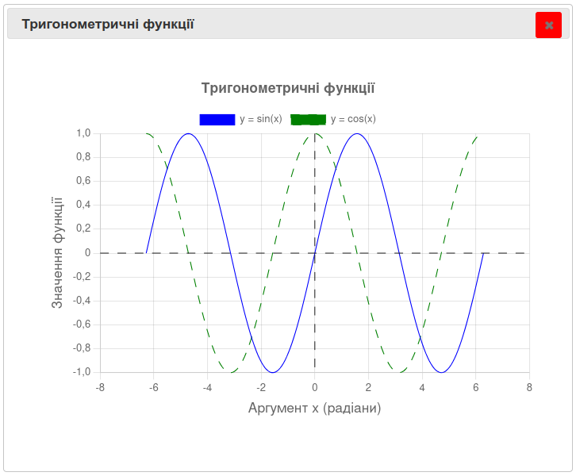
Ще дві команди допомагають зробити графік виразнішим:
plt.fill_between(x, y) — зафарбовує всю область між лінією графіка та віссю X. Це додає малюнку сучасного «об'ємного» вигляду;alpha (від 0 до 1), який приймають майже всі функції побудови графіків, — задає прозорість заливки чи лінії.import matplotlib.pyplot as plt
# Номери контрольних робіт
x = [1, 2, 3, 4, 5, 6, 7, 8, 9, 10]
# Оцінки (у відсотках)
y = [62, 75, 68, 80, 91, 87, 95, 89, 93, 97]
# Побудова графіка
plt.plot(x, y, color="blue")
# Зафарбування області під графіком
plt.fill_between(x, y, color="lightblue", alpha=0.5)
# Межі осі Y
plt.ylim(0, 100)
# Додавання заголовка та підписів осей
plt.title("Успішність учня")
plt.xlabel("Контрольна робота")
plt.ylabel("Результат (%)")
# Сітка
plt.grid(True)
# Відображення графіка
plt.show()
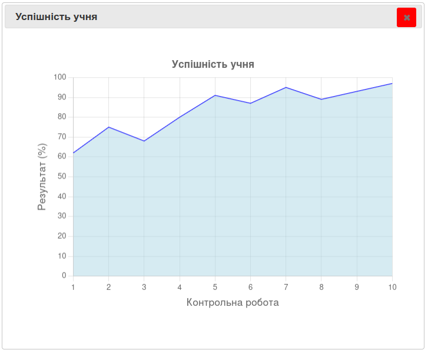
У реальному житті аналітики не вигадують масиви з голови, а завантажують їх із зовнішніх джерел: баз даних, файлів чи інтернет-сервісів. Найпростіший випадок — це коли дані вже лежать у звичайних списках Python:
import matplotlib.pyplot as plt
years = [2020, 2021, 2022, 2023, 2024, 2025, 2026]
population = [50, 52, 55, 54, 58, 61, 65] # Населення умовного міста, тис. осіб.
plt.plot(years, population, marker="o", color="darkgreen", linewidth=2)
plt.title("Динаміка зростання чисельності населення міста")
plt.xlabel("Рік")
plt.ylabel("Населення (тис. чол.)")
plt.grid(True)
plt.show()
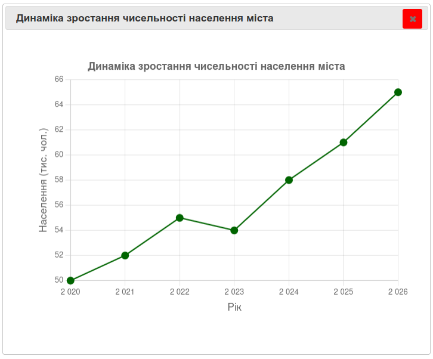
Якщо ж дані зберігаються у текстовому CSV-файлі (значення, розділені комами), їх можна прочитати за допомогою вбудованого модуля csv: відкрити файл, пройти циклом по його рядках і розкласти потрібні стовпчики у звичайні списки, не забуваючи конвертувати текстові числа у float чи int.
Для виконання наступної вправи вам знадобиться файл weather_stats.csv , який ви можете створити у будь-якому текстовому редакторі, скопіювавши подані нижче дані:
Experiment,Measurement
1,18.5
2,19.1
3,20.0
4,19.8
5,21.3
6,22.0
7,21.6
8,23.4
9,24.1
10,23.8
11,25.0
12,25.7
13,26.1
14,25.9
15,27.3
16,28.0
17,27.8
18,29.1
19,29.7
20,30.2
CSV (Comma-Separated Values) — простий текстовий формат для зберігання табличних даних. Кожен рядок файлу відповідає одному рядку таблиці, а значення в рядку розділяються спеціальним символом (найчастіше комою).
import matplotlib.pyplot as plt
import csv
experiments = []
results = []
with open("weather_stats.csv", "r", encoding="utf-8") as file:
reader = csv.reader(file)
header = next(reader) # Пропускаємо перший рядок-заголовок.
for row in reader:
experiments.append(int(row[0])) # Перша колонка — номер досліду.
results.append(float(row[1])) # Друга колонка — показник.
# Будуємо графік за реальними даними з файлу.
plt.plot(experiments, results, color="navy", marker="s", linestyle="-.")
plt.title("Візуалізація результатів лабораторного експерименту")
plt.xlabel("Номер досліду")
plt.ylabel("Виміряний показник")
plt.grid(True)
plt.show()
Якщо ж числові дані у файлі не містять текстових заголовків і розділені пробілами чи комами, часто зручніше скористатися вже знайомою нам функцією
np.loadtxt()(Розділ 14.16), яка одразу поверне готовий масив NumPy.
plt.savefig)Побудований графік можна автоматично зберегти на диск як картинку — для звіту чи презентації.
Вказівку
plt.savefig()потрібно викликати обов'язково доplt.show(), інакше вікно очиститься і ви збережете порожнє біле полотно.
import csv
import matplotlib.pyplot as plt
experiments = []
results = []
with open("weather_stats.csv", "r", encoding="utf-8") as file:
reader = csv.reader(file)
header = next(reader) # Пропускаємо перший рядок-заголовок.
for row in reader:
experiments.append(int(row[0])) # Перша колонка — номер досліду.
results.append(float(row[1])) # Друга колонка — показник.
# Будуємо графік за реальними даними з файлу.
plt.plot(experiments, results, color="navy", marker="s", linestyle="-.")
plt.title("Візуалізація результатів лабораторного експерименту")
plt.xlabel("Номер досліду")
plt.ylabel("Виміряний показник")
plt.grid(True)
# Зберігаємо картинку в поточну папку проекту.
plt.savefig("my_plot.png", dpi=100) # dpi — чіткість/якість зображення.
plt.savefig("report.pdf") # Можна зберегти навіть у векторному форматі PDF!
plt.show()
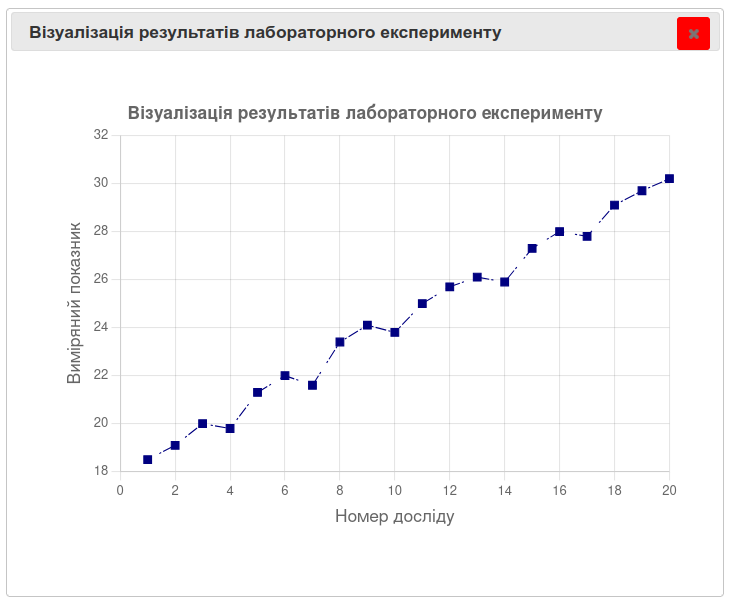
plt.subplot)Якщо потрібно розмістити кілька різних діаграм поруч в одному великому вікні, використовують команду plt.subplot(рядків, стовпців, номер_зони):
import matplotlib.pyplot as plt
import numpy as np
x = np.arange(1, 5)
# Створюємо сітку 1 рядок, 2 стовпці. Активуємо зону 1 (ліворуч).
plt.subplot(1, 2, 1)
plt.plot(x, x ** 2, color="red")
plt.title("Квадрати")
# Активуємо зону 2 (праворуч).
plt.subplot(1, 2, 2)
plt.bar(x, x ** 3, color="blue")
plt.title("Куби")
plt.show()
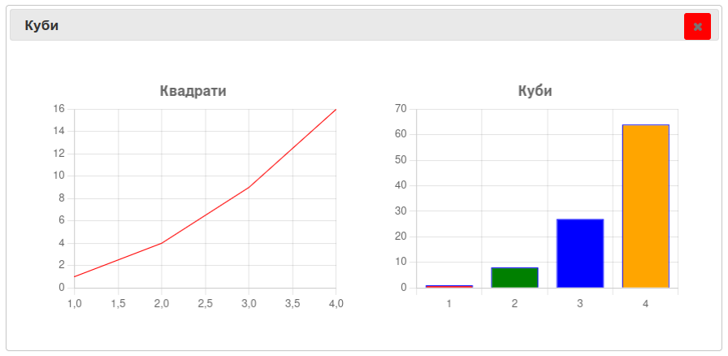
1. Забути написати plt.show().
Програма виконає всі розрахунки в пам'яті, побудує графік, але екран залишиться порожнім — ви просто не побачите результат, і жодного повідомлення про помилку при цьому не буде.
2. Різна кількість значень X та Y.
plt.plot([1, 2, 3], [10, 20, 30, 40])
Traceback (most recent call last):
File "<stdin>", line 1, in <module>
ValueError: x and y must have same first dimension, but have shapes (3,) and (4,)
Як виправити: перевірте довжину обох списків за допомогою len(). Кількість точок на осях X і Y завжди повинна бути однаковою.
3. Викликати plt.savefig() після plt.show().
Як ми вже зазначали в розділі 15.15, після закриття вікна plt.show() полотно очищується, тому збережений файл виявиться порожнім.
Як виправити: завжди розташовуйте plt.savefig() до рядка з plt.show().
4. Занадто багато ліній на одному малюнку.
Якщо накласти два десятки графіків одночасно, малюнок перетвориться на кольорову пляму, де нічого неможливо розібрати.
Як виправити: розділіть графіки на кілька окремих вікон командою plt.subplot() (Розділ 15.16) замість того, щоб зображати все на одному полотні.
| Категорія | Функція | Типи графіків / параметри | Опис |
|---|---|---|---|
| Побудова графіків | plot(x, y, color=, linewidth=, marker=, linestyle=/ls=, markersize=, label=) |
лінійний (line) |
Лінійний графік, підтримує циклічну палітру кольорів за замовчуванням |
bar(x, y, ...) |
стовпчиковий (bar) |
Вертикальна стовпчикова діаграма | |
barh(x, y, ...) |
лінійчата (barh) |
Горизонтальна лінійчата діаграма (isHorizontal) |
|
scatter(x, y, color=) |
точковий (scatter) |
Діаграма розсіювання (точки без лінії) | |
pie(sizes, labels=) |
кругова (pie) |
Кругова діаграма з підписами часток | |
hist(data, bins=) |
гістограма | Будує стовпчикову гістограму розподілу | |
fill_between(x, y1, y2=, alpha=) |
заповнена область | Заливка області між двома кривими | |
axhline(y, color=, linewidth=, linestyle=) |
горизонтальна лінія | Допоміжна лінія на всю ширину графіка | |
axvline(x, color=, linewidth=, linestyle=) |
вертикальна лінія | Допоміжна лінія на всю висоту графіка | |
| Оформлення | title(label, fontsize=, color=) |
— | Заголовок графіка |
xlabel(s) / ylabel(s) |
— | Підписи осей | |
grid(visible, axis=) |
— | Увімкнення/вимкнення сітки по осях X/Y | |
legend() |
— | Примусове увімкнення легенди | |
xlim(min, max) / ylim(min, max) |
— | Встановлення (і читання) меж осей | |
axis(...) |
— | Приймає аргументи без помилки | |
| Керування фігурою | show() |
— | Відтворює графіки |
clf() |
— | Очищає поточну (ще не показану) фігуру | |
subplot(nrows, ncols, index) |
— | Сітка підобластей | |
| Експорт | savefig(fname, dpi=, format=, transparent=, facecolor=) |
— | Збереження у PNG, JPEG або PDF |
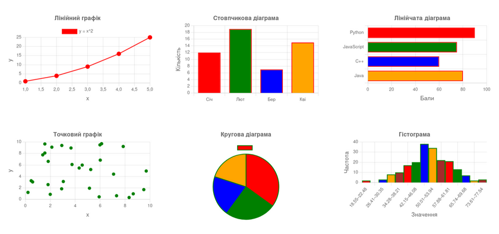
Побудуйте графік завантаження процесора (%) для шести моментів часу ["10:00", "10:05", "10:10", "10:15", "10:20", "10:25"] зі значеннями [45, 55, 88, 95, 30, 40]. Додайте заголовок, підписи осей, обмежте вісь Y діапазоном від 0 до 100 за допомогою plt.ylim() та ввімкніть сітку.
За допомогою np.linspace() створіть масив x від -5 до 5. Побудуйте на одному малюнку два графіки: лінійну функцію y = 2x (червона суцільна лінія) та квадратичну y = x**2 (синя пунктирна лінія). Додайте легенду, заголовок та підписи осей.
Дано список команд ["Соколи", "Беркути", "Тигри", "Леви"] та їхні очки [45, 58, 38, 62]. Побудуйте горизонтальну стовпчасту діаграму рейтингу (plt.barh()) з підписаною віссю очок.
Створіть кругову діаграму витрат родини за місяць: комуналка — 3000 грн, продукти — 6000 грн, розваги — 1500 грн, транспорт — 1000 грн. Виведіть відсотки на екран, а сектор із найбільшою статтею витрат «висуньте» за допомогою параметра explode.
Побудуйте лінійний графік зміни температури за тиждень (оберіть 7 довільних значень). Додайте заголовок, сітку, підписи осей та збережіть результат у файл weather.png.
Об'єднаємо всі знання цього розділу (і попереднього, про NumPy) в одному великому проєкті. Пройдемо весь шлях справжнього дата-аналітика: зчитаємо дані з файлу, обробимо їх математично за допомогою NumPy, намалюємо графік у Matplotlib та збережемо результат на диск.
Задача. Є текстовий файл sales.txt, у якому записані суми продажів магазину за кожен місяць року (12 чисел, кожне з нового рядка). Потрібно:
import numpy as np
import matplotlib.pyplot as plt
# --- КРОК 1: емуляція створення файлу (для тестування проєкту) ---
demo_data = [120, 150, 90, 140, 210, 180, 250, 300, 220, 190, 260, 280]
np.savetxt("sales.txt", demo_data)
# --- КРОК 2: зчитування та обробка за допомогою NumPy ---
sales = np.loadtxt("sales.txt")
months = np.arange(1, 13)
average_sales = np.mean(sales)
print(f"Середні продажі за рік: {average_sales} тис. грн")
# --- КРОК 3: візуалізація через Matplotlib ---
# Малюємо стовпчики продажів.
plt.bar(months, sales, color="lightgreen", edgecolor="darkgreen", label="Продажі за місяць")
# Малюємо горизонтальну лінію середнього значення для порівняння.
plt.axhline(y=average_sales, color="red", linestyle="--", linewidth=2,
label=f"Середнє ({average_sales:.1f})")
# Оформлення.
plt.title("Фінансовий звіт магазину за рік", fontsize=14)
plt.xlabel("Місяць року")
plt.ylabel("Сума (тис. грн)")
plt.xticks(months) # Показувати номери місяців чітко від 1 до 12.
plt.grid(True, axis="y", linestyle=":")
plt.legend()
# --- КРОК 4: збереження результату ---
plt.savefig("sales_report.png", dpi=300)
print("Графік успішно збережено у файл sales_report.png!")
plt.show()